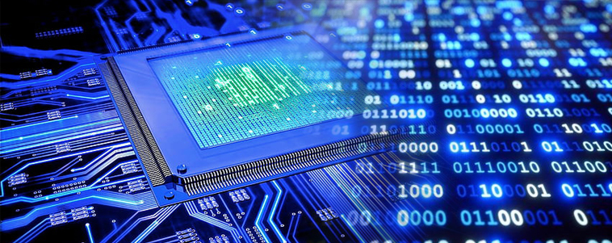
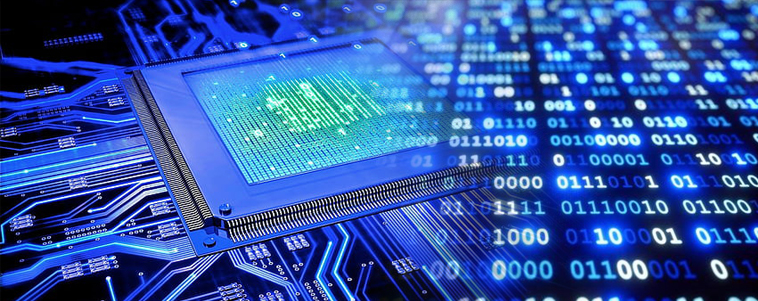

BAB.I
SISTEM BILANGAN
Fha'iz Raka Saputra | X-RPL.2
Fha'iz Raka Saputra | X-RPL.2

Sistem bilangan merupakan hal yang penting dalam proses komputer. Bilangan-bilangan tersebut diolah,
sehingga dapat menghasilkan output yang sesuai dengan keinginan.
Maka perlu mempelajari mengenai sistem bilangan untuk dapat membuat suatu output sesuai dengan keinginan.
Sistem bilangan adalah suatu metode untuk menginisialisasi sebuah besaran. Dalam teknik digital atau teknik mikrokontroler biasanya hanya mengenal satu jenis sistem bilangan,
yaitu sistem bilangan biner. Sistem bilangan ini hanya mempunyai nilai 1 dan 0. Nilai 1 dapat diartikan benar dan 0 dapat diartikan salah.
Pada sistem yang berjalan dalam sebuah komputer, sistem bilangan binerlah yang digunakan.
Terdapat beberapa jenis sistem bilangan, salah satunya adalah sistem bilangan biner.
Konsep dasar sistem bilangan, senantiasa mempunyai base (radix), absolute digit, dan positional (place) value.
Pada sistem bilangan, terdapat beberapa jenis yang dikenal oleh sistem komputer, yaitu sebagai berikut :
Sistem bilangan desimal adalah sistem bilangan yang mempunyai 10 digit atau angka.
Oleh sebab itu, sistem bilangan ini sering disebut basis 10. Sistem bilangan desimal terdiri dari 0, 1, 2, 3, 4, 5, 6, 7, 8, 9
yang nilainya semakin ke kiri menunjukan desimal atau nilai yang semakin besar.
Sistem bilangan biner adalah sistem bilanganyang hanya 2 angka digit, yaitu 0 dan 1.
Maka sistem bilangan ini juga dikenal dengan sistem basis 2. Sistem bilangan ini sering digunakan pada pemrosesan suatu data atau
rangkaian digital. Oleh sebab itu, kita sering mendengar istilah "bit" yang merupakan kepanjangan dari biner dan digit.
Sistem bilangan ini mempunyai kelipatan 2⁰, 2¹, 2², 2³, 2⁴, dan kelipatan bertambah seterusnya dihitung dari kanan ke kiri.
Sistem bilangan oktal adalah sistem bilangan yang berbasis 8. Sistem bilangan oktal ini terdapat dari 0, 1, 2, 3, 4, 5, 6, 7.
Sistem bilangan oktal ini mempunyai kelipatan 8⁰, 8¹, 8², 8³, 8⁴, dan kelipatan bertambah seterusnya dihitung dari kanan ke kiri.
Sistem bilangan Heksadesimal adalah bilangan yang berbasis 16.
Sistem bilangan ini mempunyai 16 simbol yang terdiri dari 10 angka yang dipakai pada sistem desimal, yaitu angka
0 sampai dengan 9 dan 6 huruf A, B, C, D, E, dan C = 12; D = 13; E = 14 dan F = 15.
Arti dari kata konversi adalah perubahan dari satu sistem ke sistem lain atau dari satu bentuk ke bentuk lain.
Dalam sistem bilangan terdapat istilah konversi bilangan.
Mengonversi suatu sistem bilangan dapat dilakukan dengan mudah, tetapi butuh ketelitian yang ekstra. Kesalahan kecil dalam mengonversi
akan menyebabkan kesalahan secara keseluruhan. Terdapat banyak metode untuk mengonversi sistem bilangan,
metode yang paling mudah dan sering digunakan adalah "Proses Sisa".
Dalam mengonversi sistem bilangan desimal ke sistem bilangan lain dapat dilakukan dengan membagi nilai bilangan
desimal dengan basis dari sistem bilangan lain.
Konversi sistem bilangan desimal ke sistem bilangan biner dapat dilakukan dengan membagi 2.
Karena basis dari sistem bilangan biner adalah 2.
Konversi bilangan desimal ke bilangan biner dapat dilakukan dengan membagi 2.
Karena basis dari sistem bilangan biner adalah 2.
Konversi sistem bilangan desimal ke sistem bilangan hexadesimal dapat dilakukan dengan membagi 16.
Karena basis dari sistem bilangan heksadesimal adalah 16.
Sistem bilangan biner juga dapat dikonversi menjadi sistem bilangan
desimal, oktal, maupun hexadesimal.
Dalam mengonversi bilangan biner ke bilangan desimal, dapat menggunakan cara mengalikan setiap
bilangan biner dengan bilangan perpangkatan 2.
Cara mengonversi sistem bilangan biner ke sistem bilangan oktal adalah dengan mengelompokan masing-masing bilangan
menjadi 3 bit biner dimulai dari kanan, kemudian mengonversi masing-masing kelompok tersebut.
Konversi sistem bilangan biner ke sistem bilangan hexadesimal sama dengan konversi dari sistem bilangan biner ke oktal.
Hanya berbeda pada aturan penulisan 10 - 15
Sistem bilangan oktal dapat dikonversi menjadi sistem bilangan yang lain.
Mengonversi sistem bilangan oktal ke desimal dilakukan dengan cara mengalikan setiap bilangan oktal dengan perpangkatan 8.
Cara mengkonversi dari bilangan oktal menjadi bilangan biner adalah membagi dengan basis bilangan biner, yaitu 2.
Tetapi setiap digit bilangan harus dibagi dengan 2.
Mengonversi bilangan oktal menjadi bilangan hexadesimal dibutuhkan dua kali proses perhitungan.
Sistem bilangan heksadesimal dapat dikonversi ke sistem bilangan desimal, biner, dan oktal.
Berikut adalah pengonversian bilangan heksadesimal.
Untuk mengubah heksadesimal menjadi desimal adalah mengalikan dengan basis heksadesimal, yaitu 16.
Perhatikan contoh berikut :
1052(16) = ..... (10)
A52(16) = (10 × 16²) + (5 × 16¹) + (2 × 16⁰)
= 2560 + 80 + 2
= 2642(10)
Jadi 1052(16) = 2642(10)
Cara mengkonversi bilangan heksadesimal menjadi bilangan biner adalah dengan mengonversi satu persatu digit bilangan
heksadesimal menjadi biner, kemudian hasilnya disusun.
Perhatikan contoh berikut :
6(16) = .... (2)
Cara yang dilakukan dengan melihat tabel konversi yang telah disebutkan sebelumnya.
Pada tabel konversi 6(16) = 110(2) karena pada sistem bilangan heksadesimal harus terdiri dari 4 digit maka,
ditambahkan angka 0 pada sebelah kiri sampai angka berjumlah 4 digit maka hasilnya adalah 6(16) = 0110(2)
Perhatikan contoh lain berikut :
5A87(16) = .... (2)
5 = 0101
A = 1010
8 = 1000
7 = 0111
Bila disusun menjadi hasil akhir :
5A87 (16) = 0101101010000111 (2)
Cara mengonversi bilangan heksadesimal menjadi oktal melalui dua proses.
Perhatikan contoh berikut :
3D6(16) = .... (8)
1. Mengonversi menjadi bilangan biner terlebih dahulu.
3 = 0011
D = 1101
6 = 0110
Setelah menjadi bilangan biner maka mengelompokan hasilnya menjadi 3 digit.
001 111 010 110.
Maka hasil akhirnya adalah 3D6(16) = 1726(8).